| Rafa Nadal | Novak Djokovic | Garbiñe Muguruza |
|---|---|---|
| 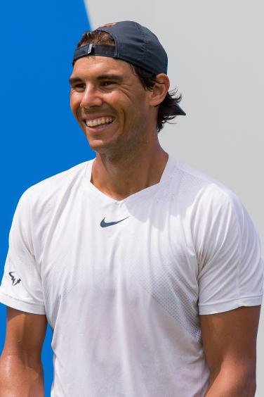 | 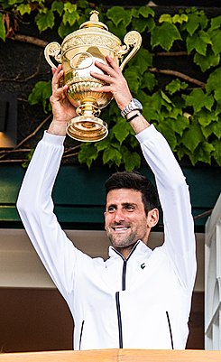 | 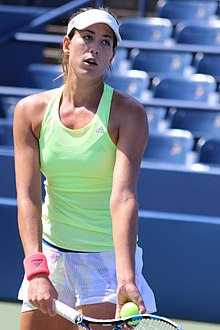 |
| 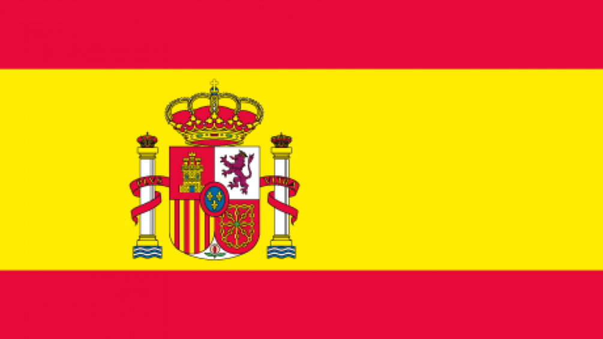 | 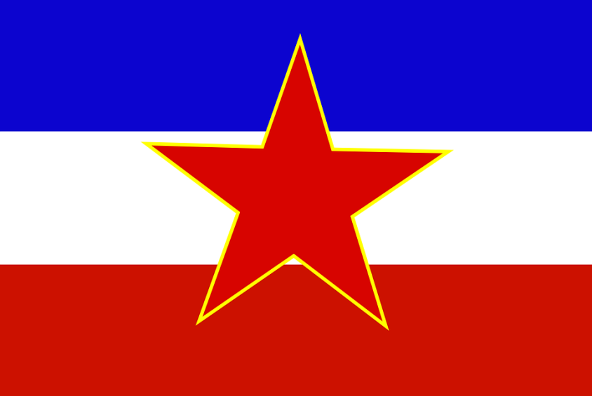 | 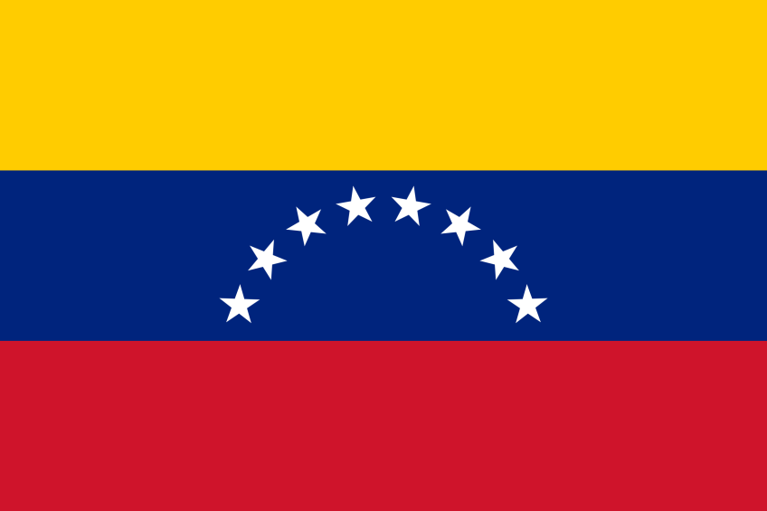 |
| 1986ko ekainiaren 6a (36) | 1987ko maiatzaren 22a (35) | 1993ko urriaren 9a (29) |
| Manacor, Espainia | Belgrado,Yugoslabia | Caracas, Venezuela |
| 185 (cm) | 188 (cm) | 182 (cm) |
| 85 (kg) | 77 (kg) | 73 (kg) |
| María Sharápova | Roger Federer | Paula badosa |
|---|---|---|
| 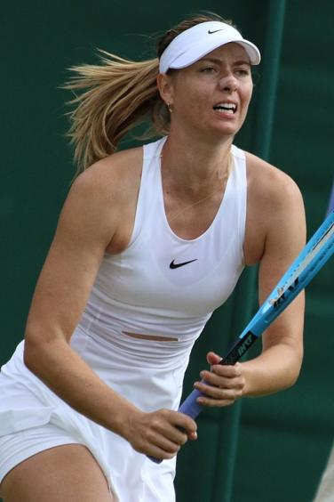 | 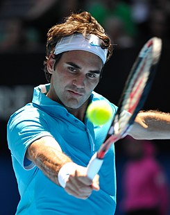 | 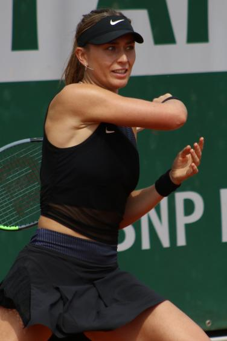 |
| 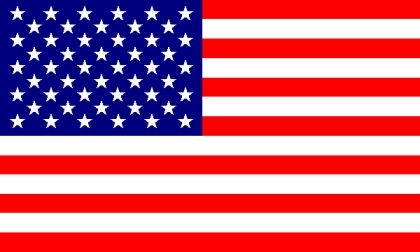 | 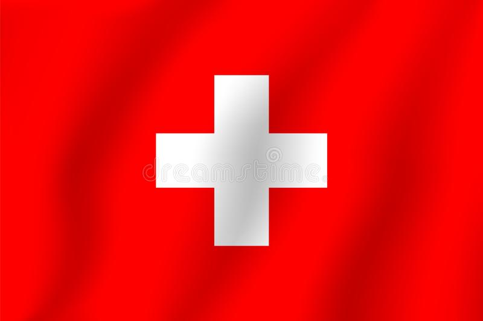 | |
| 1987ko apirilaren 19an (35) | 1981ko abuztuaren 8a (41) | 1997ko azaroaren 15 (24) |
| California, Estatu Batuetak | Wollerau, Suiza | Nueva York, Estatu Batuak |
| 188 (cm) | 185 (cm) | 180 (cm) |
| 75 (kg) | 85 (kg) | 64 (kg) |
| Carlos Alcaraz | 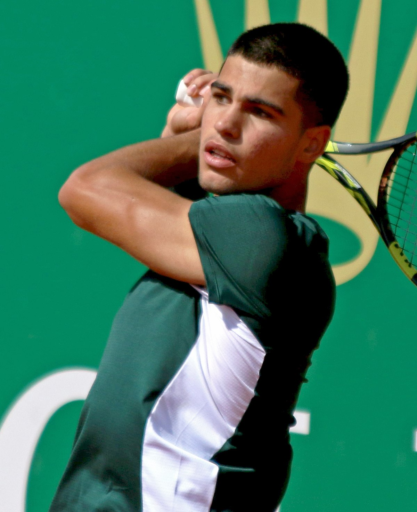 |
|---|
| 2003ko maiatzaren 5 (19) |
| La Palmar, Espainia |
| 183 (cm) |
| 74 (kg) |